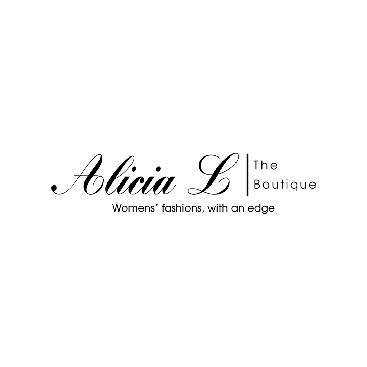
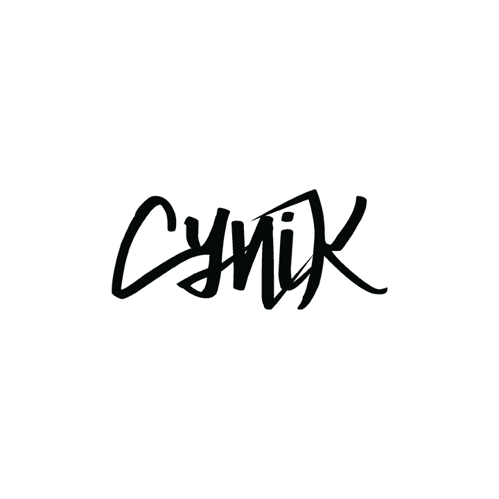

Alicia L is a distinguished clothing boutique offering classic women’s apparel with an edge. Alicia L represents the woman who isn’t afraid to stand up and stand out

Astoria Laser Clinic is a medical spa located in Tyson’s Corner with state-of-the-art technologies, personalized service and results-oriented treatments, you’ll leave seeing visible results

CYNIK, based in the Maryland, is a multimedia company with a streetwear notch under their belt. Heavily influenced by the 80’s and 90’s, they create raw products for the people.